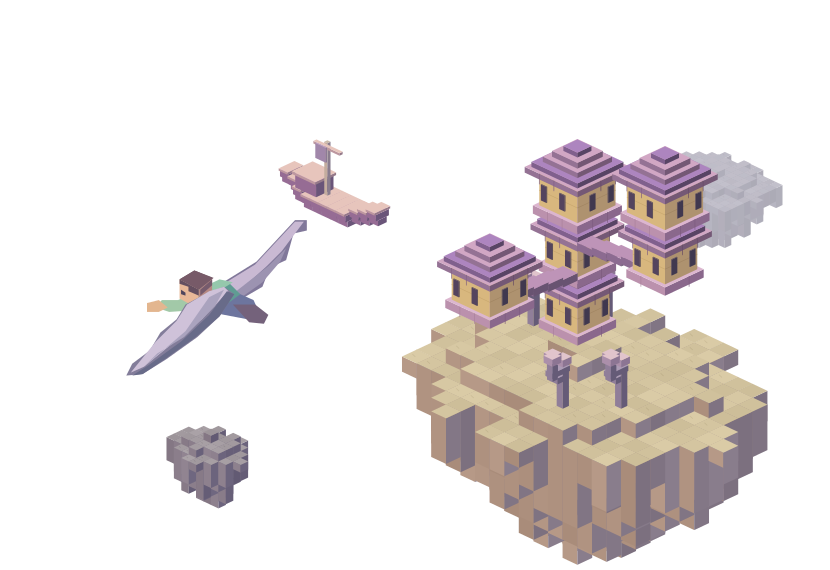
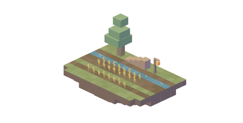

我的世界 / 多人生存服观察
翅膀
先到了。
在《我的世界》，末地城附近的船上藏着一双翅膀。
玩家总是先找到城，再得到它吗？


地面手记
落到地上，还有事做。
同一份存档，可以先有翅膀，再有第一粒种子。有人展开过双翼，也给地面添了一级台阶。
我的世界 / 多人生存服观察
在《我的世界》，末地城附近的船上藏着一双翅膀。
玩家总是先找到城，再得到它吗？


地面手记
同一份存档，可以先有翅膀，再有第一粒种子。有人展开过双翼，也给地面添了一级台阶。